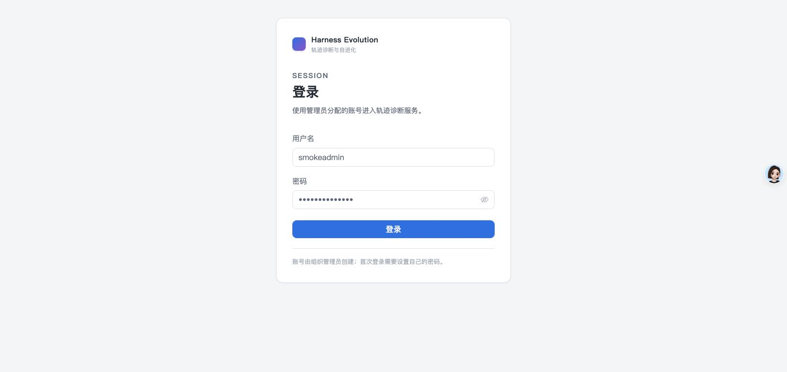
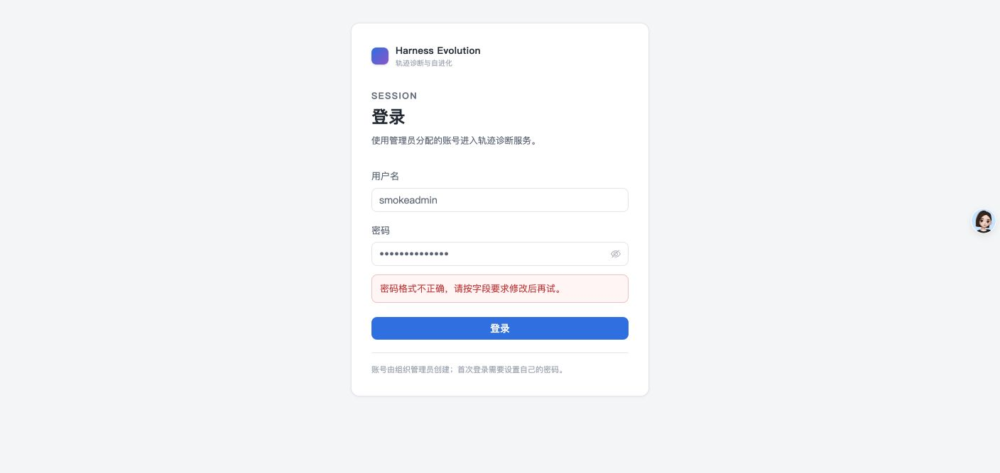
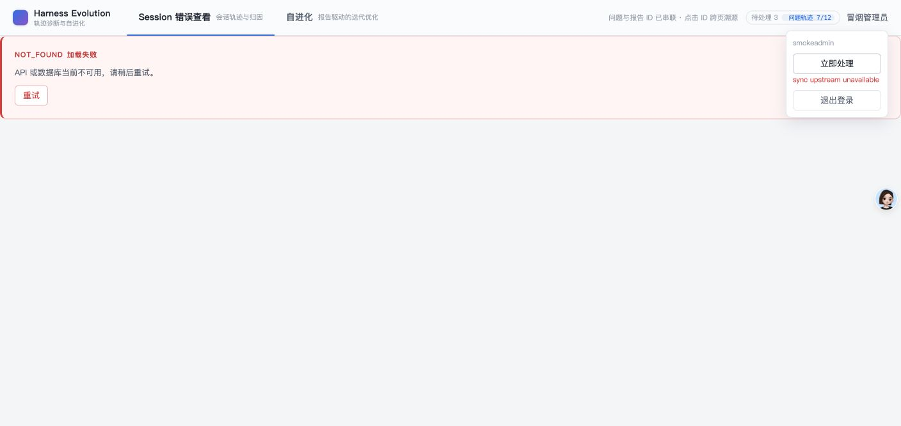
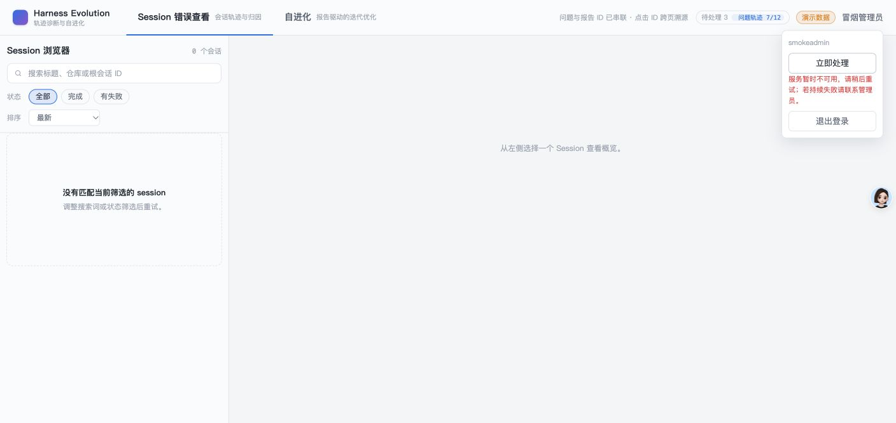
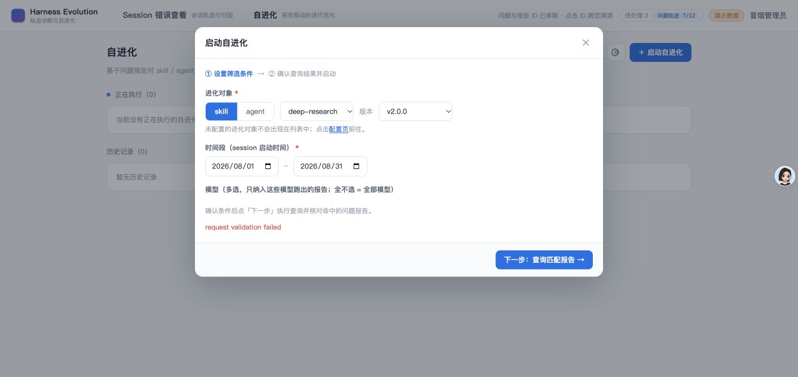
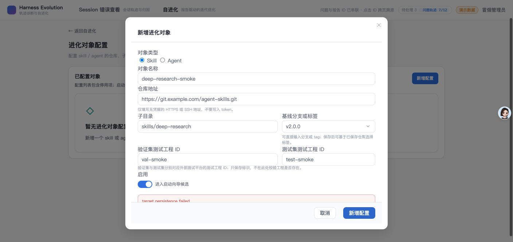
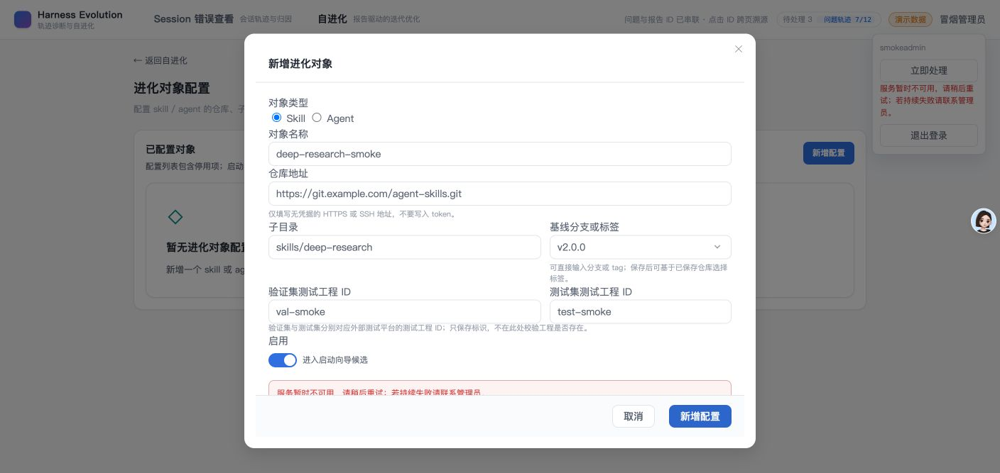

- PR
- #192
- Issue
- #191
- 修复前提交
- bf37566
- 修复后提交
- 7a6058f
- 验证方式
- 本地 Vite + deterministic mock API
Before / After GUI Comparison
PR #192 错误提示冒烟报告
针对登录校验、立即同步、自进化查询和目标保存四类失败场景做了修复前后 GUI 对比。修复后不再展示英文内部短语，改为字段定位、服务不可用或场景化建议；四个场景全部通过。
4对比场景
8GUI 截图
0未修复缺陷
Environment and Artifact
2026-11-04 · Chrome · mock API · 基线 bf37566 / 修复 7a6058fScenario Matrix
4 fixed| # | 场景 | 结果 | 修复前 | 修复后 | 证据 |
|---|---|---|---|---|---|
| 01 | 登录密码 422 | FIXED | 字段错误从全局英文提示改为密码字段建议。 | 01-login-422-before.png 05-login-422-after.png | |
| 02 | 立即同步 500 | FIXED | 服务失败隐藏原始上游消息并给出后续动作。 | 02-sync-500-before.png 06-sync-500-after.png | |
| 03 | 自进化查询 422 | FIXED | 校验详情定位到结束时间并说明修改方式。 | 03-probe-422-before.png 07-probe-422-after.png | |
| 04 | 目标保存 500 | FIXED | 保存弹窗保留并展示稳定的服务失败建议。 | 04-target-500-before.png 08-target-500-after.png |
Issues and Observations
P3 首次目标保存冒烟未命中失败分支首次目标保存冒烟未命中失败分支
- 现象
- mock 的 GET 路由先于方法判断命中 POST，导致保存看似成功。
- 根因
- 测试桩路由顺序错误，不是产品缺陷。
- 处置
- 调整 mock 方法判断并重采修复前后截图。
Fixed · mock scaffolding
Evidence
8 screenshots






Automated Coverage Assessment
2 areas reviewed| 范围 | 覆盖 | 结论 | 建议 |
|---|---|---|---|
| 共享错误格式化 | UT + GUI | 字段级与稳定码文案由单测锁定，GUI 样本通过。 | 新增错误码时补充单测与场景截图。 |
| 真实后端故障注入 | Mock only | 本次只验证前端呈现契约。 | 发布前保留真实 API 健康检查。 |
Conclusion
Smoke passed四个目标场景的修复后提示均精准、可执行，且不暴露英文内部短语。
- 所有失败提示保留用户上下文
- 字段级 422 与服务级 500 均有下一步建议
Evidence generated by deterministic local GUI smoke; no production credentials used.